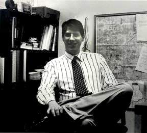

|
 |
"There's the argument that it should be about, what we think, to educate and entertain. And that means educating the listeners as well as the DJ's. Basically providing a forum for unheard voices." |
|
I am the Young Volunteers in Action programming director at the Volunteer Center of
Greater Durham....Basically I do all the sorts of things that are involved with the youth
volunteer program, whether it be getting funding, writing grants, interviewing, actually
recruiting, interviewing and referring volunteers. I basically work with 23 of Durham's
public and private middle and high schools and about 60 different agencies that use
youth. I interview each one and refer them to an agency and follow up. there's also an
after school program at a couple of the middle schools where we provide group leaders,
who go out with the students and volunteer at different places and do reflections and
stuff...like service learning. And then there's also a student ward, which is volunteers
from different schools who come together and plan their own service projects, do all the
stuff it takes to carry that out. I’m also right now, working on designing a more
expanded summer program and getting funding for that.
I got involved in XDU the second day I was here in town, about a year and a half ago, sept 24, 1995. I moved here the day before and went to the gastr del sol Coffeehouse show that night...Holly and Lisa came out and introduced themselves. I told [Holly] about wanting to get involved and having been program director at my old station and she's like, "Oh, well you should come to a board meeting. They're on Monday. You should come and, ya know, just come and let us know what you're interested in doing and we'd be happy to have you." So I went to the board meeting. I started off, got introduced around to everyone at that meeting and they said “Well what kind of stuff do you want to do?" "I’d really like to do music staff." They were short on people there, so I got immediately involved with that. I also went through quick, super-training that week so I was deejaying within 2 weeks and on the board. College radio kept me at college and kept me happy there, at a school of people who, for the most part I was indifferent to or didn’t like. I went to a school that was very small, liberal arts, very expensive, upper class, way upper class - like the school car was like a Saab 900 ...I’ve seen more Saabs on that campus than in any Saab dealership. The people at the radio station were a lot more down to a earth, and a lot cooler. It also got me in touch with the community there because we had community DJ's, which I think is a major strength as you actually get to know what's going on in the city. I mean, Duke is sort of in Durham but it's also very separated...Connecticut College is completely separated. It was nice to have a connection to the community and to know where to go and what things were actually happening in New London, other than what's on campus. I’d say the biggest difference is both the playlist and what stems from it....At my old station, we didn't have a playlist or playlist requirements. It was up to you to decide what you wanted to play and, if you did a new music show, which was like the rock show, you were strongly encouraged to play at least 3 new releases per hour, however it wasn’t a requirement. So when I got here and I saw there was this playlist, I thought "Oh god, I don't want to deal with this...Part of the other difference between the stations, would be that because XDU has more stringent requirements, like having a playlist, the shows and the quality overall of the station was much better than ours at college, CNI, which was very hit or miss. I think XDU forces DJ's to maybe stay with their same favorite bands, but explore other things as well. When I went up to college, I was coming from Louisiana, where there's like absolutely no musical scene, other than a great blues scene. Everyone thought I had such way out their tastes, because in high school, which was like 88-91, I was listening to R.E.M. and to the Red Hot Chili Peppers and Fishbone and Jane's Addiction...Then I got to school and there was all this other stuff going on. So I ended up, my tastes changed a lot...Actually senior year of college, I started to realize that jazz wasn't as boring as I had previously thought...and then also I was listening to a lot of experimental noise kinds of things that I got even more exposed to when I moved here, that cross over a lot with, at least the aesthetics of, free jazz, where there doesn't necessarily have to be this chorus- verse-chorus structure and having things be in four-four and being just very melodic. That there can be elements of dissonance and counter- balance and lots of different other things going on and still have it be interesting and good and it can still rock. A lot of the music that I was listening to as I was leaving college was heading me more into the jazz direction, but XDU definitely accelerated the sort of transition and now I’m a jazz DJ as opposed to a rock DJ and am doing one of those specialty shows that I never would have dreamed of doing. That's another great thing about XDU, is that people will ask you to do something and give you encouragement to do something if you're unsure. Not if...if you're not sure you want to do it, they won't force you into it, but they will give you any encouragement that you need to do something that you think you might want to do but you're not sure you have the ability. I actually took some time off from doing a show because I felt like I was not really exploring anything with my rock show...I was always just pulling things off the playlist, and while it was things I liked, it was things that I knew from music staff and I knew I was going to like and I wasn't really going into the record library and pulling out things I didn't know. And I wasn't really learning anything new. I was keeping abreast of what was new, but I wasn't learning anything. Now I generally feel much more like learning about jazz, learning about different kinds of jazz. I do sort of miss [a rock show]. You have a lot more room to experiment, in that, you can like play like three things at once, which I really don't feel like I would be able to do, at least not very often, on a jazz show, but it's something that I did almost every show on rock shows. That's one of the best things about college radio is the ability for a DJ to be creative. I love just the creative aspects and the way you can sort of be free to do what you want. See, there's two arguments to what college radio should be about. There's the argument that it should be about, what we think, to educate and entertain. And that means educating the listeners as well as the DJ's. Basically providing a forum for unheard voices. And then there's the idea that it should be a training ground for professional DJs and people should, like any other part of college, learn skills that they can apply in real life. It's sort of interesting to see the tie between the way a school works and the way a station works. [XDU] definitely gains me access into the duke community as a community member, like a Durham community member. I know about a lot more things that are going on at duke, what students are doing, what certain professors are like, about shows that are happening. Wherever we go there's someone from XDU, who's involved with something else. That's another great thing is that everyone's involved in like so many other things, you get exposed to it....It's definitely a way for me as a community member to take advantage and know about things that are happening at duke. |
I think that it definitely offers students who are not as traditional, or who have a
particular interest in music, or even a particular type of music, to explore that... College
radio in general offers sort off like a gathering space for people who have more offbeat
personalities and really specialized interests. A lot of times it is people who have very
few social skills and aren't good at parties and stuff because they have such this insane
interest in music ...There's just a wide variety of students that it appeals to because they
all have this...I’m sure that in every one of their group of friends, they're the person
with the weird music, but they're okay anyway. It's just like one of the quirks that
everyone sort of knows about, whereas when they come to XDU it's a place for them to
feel at home. It does add a bit of alternative culture to Duke and its image. I think that
Freewater does in the same way probably. I know our campus humor magazine at
college did sort of in the same way. I think it's as important as an African Studies
department and other things like that in that it is offering a completely... definitely like
part of a student's education. At least to have it existing and have it available, even if
they don't take advantage of it. And I don't think it is for everyone. I don't think a lot
of people would be comfortable, would like it, or would even care about it. But I think
it's very important that it's there.
I’m surprised that it's not more of a social gathering sort of place than it is...We were surprised that the students who are involved are not more like "Okay, lets have XDU parties, XDU functions" and involved with each other...It seemed like there were a lot of people who would come in, do their show, and not know anyone other than the DJ before them, the DJ after them and the person who trained them and wouldn't spend more than five minutes talking to them and you know, it was sort of separate. I think in the past year and a half it has gotten to be a lot more social with a lot more sort of events going on, where DJ's know each other at least by face. I really don't give any real credence towards the argument that it's a sink hole and nothing good comes out of it and there's not point for us to be on the air because obviously there's so much good coming out of it if there are this many people who support it, enjoy it...I think that it's really a ridiculous argument because people who are in the Arts departments are not criticized...Kathy at Institute of the Arts is commended for bringing in the same stuff we play...I guess there are some people who'll say, "Why do we need an African-American Studies department when such a small number of students are African-American? We should really be spending the money on more math and science and things that everyone can use. But, really, that's such a reactionary, right wing position. So few people I think take it seriously...Once stations do change over, there's a lot of backlash about that too, from people who've been listening for years. We'd get laughed out of town by XYC, all of the local musicians - I mean,that's another thing. They all want to play our benefits for free because they think it's such a good cause. They're all happy with XDU shows. To get that support from local musicians is, I think one of the highest compliments there is. Part of the purpose is to fill a niche and to provide a support space for people who are not finding satisfaction in the rest of the school or are not finding a place where they feel comfortable or a place to express themselves. I really think that it's important the same way that a unity house, or a minority student center, whatever, is important. It's not going to serve everyone. It's not supposed to serve everyone. It's set up to serve a certain group of people, to bring diversity to the school and it's not going to have a whole wide range of support and that's just a given. And it's not going to appeal to everyone. It's not super visible, but it does appeal to a lot of people in the community for a lot of different reasons. I know there are a lot of people who just listen to our jazz for drive time after work...I think Ross's show is amazingly important - that's where we get so much support from local musicians. And I think it also has a big effect on what music comes into town, on what comes into the clubs. I mean, through both the radio stations XDU and XYC, and the bands the clubs book, that has a lot of effect on people growing up here, especially ones who start bands. The bands that come up around here are very...knowledgeable as far as music theory and time changes and I think that's because, you know, they have such a nurturing environment from that community. In terms of student organizations in general, it's one of the few that the students have as much power as they want. It's not entirely student led, but it's entirely volunteer led. It works with a very large budget and it gives you a lot of power and a lot of ability to sort of do what you want. ..the idea that if you want to do something for the station you can bring it to the board and say I think we should be doing this. And most of the time it's going to be like "Okay, that's a good idea - run with it." It allows you to define your interests even more narrowly and really take part in that area or that aspect of the station...I think that most places, or most student groups or clubs, you're very limited in what you can do and there's very much a hierarchy and generally there's an administrative person at the top...I think it provides for such a diverse way to increase your skills, gain new skills and there's so much that students can get out of it. I think one thing that makes XDU unique as a station is the fact that for the past few years, it's basically been run mostly by women...If women want a power position that they can have it and it's very inclusive. I think a lot of college radio is male dominated, there are very few females in board positions or music directors... In general, being obsessed with music is a male sort of thing...I think that a lot of the music itself has historically been...all of that whole heavy metal thing was completely aimed at adolescent boys. very much so, at objectifying women. I think that creates some of it... there's so many more mean than women in rock, in jazz. It's just one of those things that's been going on for years, in the industry, and it's gone down to radio and even college radio. I don't know exactly why it is that XDU is different, but that's definitely a way in which it is different. I don't know necessarily know XDU lucked out that way. |